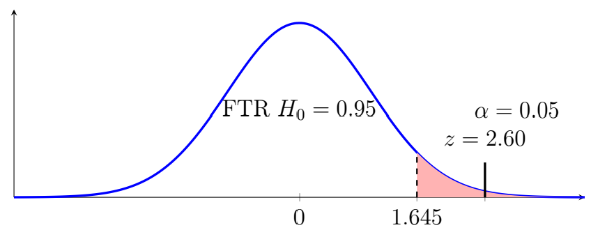

Chapter 9: Hypothesis Testing
Section 9.5: Hypothesis Test for a Population Proportion
The Test Statistic for a Population Proportion
The Proportion Test Statistic
When testing a population proportion, the test statistic is
\[z=\frac{\hat{p}-p_0}{\sqrt{\dfrac{p_0q_0}{n}}},\]where
- \(p\) is the population proportion.
- \(\hat{p}\) is the sample proportion.
- \(p_0\) is the null hypothesis proportion.
- \(q=1-p\)
- \(\hat{q}=1-\hat{p}\)
- \(q_0=1-p_0\)
For the normal approximation to be appropriate, the sample should be random or otherwise appropriately selected, observations should be independent, and the expected numbers of successes and failures under \(H_0\) should be sufficiently large. A common rule of thumb is \(np_0\geq5\) and \(nq_0\geq5\).
Example 1
A company claims that more than 40% of customers prefer Brand A. A sample of 200 customers includes 98 who prefer Brand A. Test this claim at the \(\alpha=0.05\) significance level.
Solution
- Claim – More than 40% of customers prefer Brand A.
- Complement of the claim – No more than 40% of customers prefer Brand A.
- Hypotheses – \(H_0:p\leq 0.40\), \(H_1:p>0.40\).
- Significance level – \(\alpha=0.05\).
- Select the test statistic – Since this is a proportion, \(z\).
- Compute the test statistic. The sample proportion is \[\hat{p}=\frac{98}{200}=0.49\] The test statistic is \[z=\frac{0.49-0.40}{\sqrt{0.40(0.60)/200}}=2.60.\]
- Determine the critical values – For a right-tailed test at \(\alpha=0.05\), \(z_c=1.645\).

Right-tailed test: the test statistic z = 2.60 falls in the rejection region. - Decision – Since \(2.60>1.645\), we reject \(H_0\). There is sufficient evidence to support the alternative hypothesis. We can see this graphically as \(z\) falls in the critical region.
- Conclusion – The sample provides sufficient statistical evidence to support the company's claim that more than 40% of customers prefer Brand A.
Using the \(p\)-value method the area in the right tail for \(z=2.60\) is \(0.0047\). Since this is a right-tailed test, that is the entire area, \(p\)-value \(=0.0047\).
Since \(0.0047<0.05\), we reject \(H_0\); there is sufficient evidence to support the alternative hypothesis. There is sufficient evidence to conclude that more than 40% of customers prefer Brand A. The company's claim is substantiated.